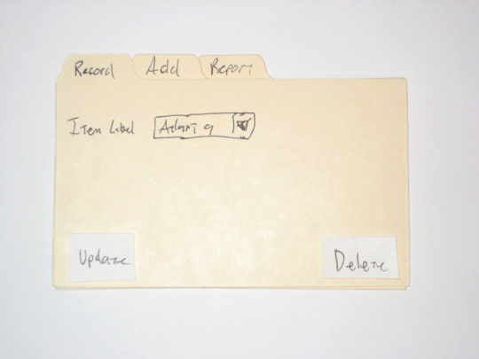
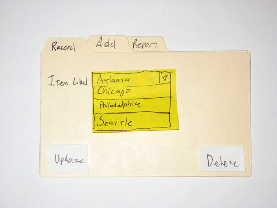
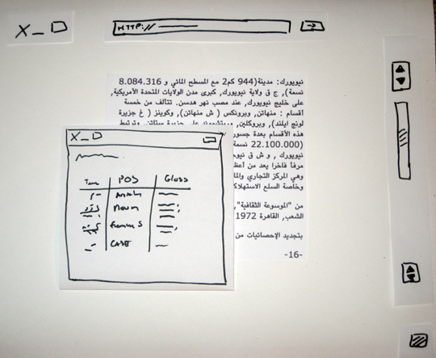

Me
Kyle Shipley
You Jane.
Why
- You're lazy
Coding is hard.
- You're cheap
Those Photoshops are expensive.
- People are too nice
You're always saying that, right?
You need a library for that AJAX-y behavior, and which gem should you use?
Tools
- Paper
- Marker / Pen
- Index cards / Post-Its
For the more refined palate
Don't overthink it.
The cost of iteration is low.
Things will change.
You gotta keep 'em separated.
Be creative!
Mix and match.
Examples
Tabs and drop-down

(http://www.alistapart.com/articles/paperprototyping/)
Tabs and drop-down

(http://www.alistapart.com/articles/paperprototyping/)
Login

(http://www.alistapart.com/articles/paperprototyping/)
Login

(http://www.alistapart.com/articles/paperprototyping/)
Login

(http://www.alistapart.com/articles/paperprototyping/)
Pop up

(http://www.alistapart.com/articles/paperprototyping/)

(http://desperatelyseekingvalidation.com/blog/2011/06/may-2011-customer-discovery-day/)
Cons
- Ephemeral
I'm actually okay with this.
- Still too concrete
You might end up prematurely optimizing.
- Sucks for distributed teams
Try something like Balsamiq Mockups.
Balsamiq Mockups

Cheaper than Photoshop, but still $79. They were nice to Quipol, though.
Resources
- Paper Prototyping by Carolyn Snyder
(I haven't read it yet, but it's supposed to be good.)
- A List Apart
- Desperately Seeking Validation
Bread and butter
- find/detect
- select
- reject
- map
- inject
detect (aka find)
[2, 4, 5, 6].detect{ |n| n.odd? }
# => 5
[1, 3, 5, 7].detect{ |n| n.even? }
# => nil
[roosevelt, hitler, tojo].detect(&:axis?)
# => hitlerWarning! Rails overrides find for ActiveRecord proxies!
select
[1, 2, 3, 4].select{ |n| n.even? }
# => [2, 4]
[1, 2, 3, 4].select{ |n| n > 5 }
# => []
[tiger, britney, kim_k].select(&:married?)
# => [kim_k]reject
[1, 2, 3, 4].reject{ |n| n.even? }
# => [1, 3]
[1, 2, 3, 4].reject{ |n| n > 5 }
# => [1, 2, 3, 4]
[astley, led_zep].reject(&:unskilled?)
# => [astley]map (aka collect)
(1..5).map{ |i| i * 3 }
# => [3, 6, 9, 12, 15]
DTEmployee.all.map(&:ssn)
# => ['123-12-1234', '987-98-9876']
# Please fill in your own and commit it
# to the repository, along with a
# credit card number. Just for funsies.inject (aka reduce)
DTEmployee.all.inject({}) do |memo, emp|
memo[emp.name] = emp.clients.count
memo
end
# => {
# "Jason" => 10_000,
# "Bob" => 5,
# "Chad" => -2
# }Don't forget to return the memo!
Really useful for converting arrays to hashes!
Why
Java-esque detect:
match = nil
for el in array do
if el.matches_condition?
match = el
break
end
endIdiomatic:
array.detect(&:matches_condition?)Why
- find/detect, select, reject, map/collect, and inject/reduce refer to specific concepts
- select, reject = apply a filter
- map = apply a function each element and collect the results
- inject = collapse a list into a single value
- less state
- not needed most of the time
- concurrency
- map/reduce easy to distribute across multiple boxes
- Hadoop, Storm, etc.
Examples
String parsing
records = File
.open("file", 'r')
.readlines
.map(&:chomp)
.map{ |line| line.gsub("-", "_" ).split("\t") }Warning! Real-world examples from Giggil.
Exclude non-media results
MEDIA = ["DVD", "Music", "Software", "Video Games", "Book"]
filtered_results = search
.results
.select{ |r| MEDIA.include? r[:product_group] }Amazon Shipping Fee Calculations
An item is overweight if (1) weight or dimensional weight > 20, (2) the shortest dimension is greater than 8, (3) the median dimension is greater than 14, OR (4) the longest dimension is greater than 20.
MAX_WEIGHT = 20
MAX_DIMENSIONS = [8, 14, 18]
DIMENSIONAL_WEIGHT_FACTOR = 194
def oversized?
weight > MAX_WEIGHT ||
dimensions.sort
.zip(MAX_DIMENSIONS)
.any?{ |arr| arr[0] > arr[1] }
end
def dimensional_weight
dimensions.inject(&:*) / DIMENSIONAL_WEIGHT_FACTOR
end
def shipping_weight
[dimensional_weight, weight].max
endSanity check emails
- Find all the methods beginning with check.
- Sort them so that the order is consistent.
- Call each method and store its result.
The Code
def generate_email
lines = methods
.select{ |m| m =~ /check_/ }
.sort
.inject([]){ |memo, m| memo << send(m).join(': ') }
log_lines lines
StatsMailer.deliver_sanity_check lines
endNote: Because << returns an array, I don't have to explicitly return my memo. (There's also reflection! Exciting and/or dangerous!)
Bonus - Metaprogramming!
This is how we added some helper methods like create_manual_scan_audit_task and create_inspection_audit_task.
AuditTaskType.all.map(&:name).each do |task_type|
define_method "create_#{task_type}_audit_task" do
return unless current_user.auditable?
@audit_task = current_user.current_audit_period \
.add_task! :task_type => task_type
end
end(Normally you wouldn't want to call map(&:name) on an ActiveRecord list, but there's only about 15 AuditTaskTypes. If you have a bigger list, use ActiveRecord::Base.connection.select_values instead.)
Summary
- Enumerable is great
- Use these methods liberally
- Fewer LOC = more maintainable software
- But no golfing!
- State is overrated
- Especially as systems become more concurrent
Enjoy your hammer!
Questions?
Presentation by showoff (https://github.com/schacon/showoff)
Source available at https://github.com/shipstar/presentations
A better presentation at http://speakerdeck.com/u/tomstuart/p/thinking-functionally-in-ruby
More specialized operators
- group_by
- partition
- zip
group_by
[1, 2, 3, 4].group_by(&:odd?)
# => {true=>[1, 3], false=>[2, 4]}
SpringfieldResident.all.group_by(&:race)
# => {
# "White / Yellow" => [lenny],
# "Black" => [carl, lou],
# "Indian" => [apu]
# }partition
[1, 2, 3, 4].partition(&:odd?)
# => [[1, 3], [2, 4]]
iphones = [i_1, i_3g, i_3gs, i_4, i_4s]
iphones.partition(&:obsolete?)
# => [[i_1, i_3g, i_3gs, i_4], [i_4s]]zip
[1, 2, 3].zip([4, 5, 6])
# => [[1, 4], [2, 5], [3, 6]]
[1, 2, 3].zip([4, 5, 6], [7, 8, 9])
# => [[1, 4, 7], [2, 5, 8], [3, 6, 9]]Intro to Functional Ruby
Kyle Shipley
Why
- Most code is incidentally complex
- for loops
- return statements
- local variables
- side effects!
- Declarative vs. imperative
- What, not how
- Function composition
- Easier to read
- ...Once you get used to it
How?
class Team
include Enumerable
attr_accessor :members
def initialize
@members = []
end
def each &block
@members.each{|member| block.call(member)}
end
endCode from http://kconrails.com/2010/11/30/ruby-enumerable-primer-part-1-the-basics/
Congratulations! You now have access to all of the methods we're about to discuss.
The basics
- all?
- any?
- none?
all?
[2, 4, 6, 8].all?{ |n| n.even? }
# => true
[1, 2, 3, 4].all?{ |n| n.odd? }
# => false
[stalin, lenin].all?(&:communist?)
# => trueany?
[1, 2, 3, 4].any?{ |n| n.even? }
# => true
[2, 4, 6, 8].any?{ |n| n.odd? }
# => false
[stalin, mccarthy].any?(&:communist?)
# => truenone?
[2, 4, 6, 8].none?{ |n| n.odd? }
# => true
[1, 2, 3, 4].none?{ |n| n.even? }
# => false
[obama, clinton].none?(&:communist?)
# => raise MaybeCommunistException
# I mean => trueinclude?
[1, 2, 3, 4].include? 3
# => true
[1, 2, 3, 4].include? 5
# => falseWhy
Take all?, for example. Java-ish Ruby:
def all_odd?(array)
array.each do |element|
return false unless element.odd?
end
return true
endIdiomatic Ruby version
array.all?(&:odd?)Less code = win
Sorting
- sort
- sort_by
sort
[3, 1, 2, 4].sort
# => [1, 2, 3, 4]
[3, 1, 2, 4].sort{ |a, b| b <=> a }
# => [4, 3, 2, 1]sort_by
words = "The dog is brown".split
words.sort_by{ |w| w.length }
# => ['is', 'the', 'dog', 'brown']
words.sort_by(&:length)
# => ['is', 'the', 'dog', 'brown']Why
- I can't write an efficient sort without a textbook
- Ruby uses quicksort internally
- Use sort_by where possible (http://brandon.dimcheff.com/2009/11/18/rubys-sort-vs-sort-by.html)